.jpg)
.jpg) 朝ごはんも優しかった。お腹いっぱいになるが体に響かない。
朝ごはんも優しかった。お腹いっぱいになるが体に響かない。
.jpg)
.jpg) おじいちゃんがこれに懲りずにまた来てねと言う。もちろんと約束した。
時間の感じ方が場面ごとに違って不思議。東京へ行ってからまだ半年もたっていないのにもう1年ほどたっている気分だった。愛知に戻ってきて何もかも懐かしく懐かしさを感じるたびに寂しさとうれしさの中間にいる。
おじいちゃんがこれに懲りずにまた来てねと言う。もちろんと約束した。
時間の感じ方が場面ごとに違って不思議。東京へ行ってからまだ半年もたっていないのにもう1年ほどたっている気分だった。愛知に戻ってきて何もかも懐かしく懐かしさを感じるたびに寂しさとうれしさの中間にいる。
自炊したものや考えたことなど生活を記録をする。
「自炊と日記」を始めることにした。 今年の6月11日から東京で一人暮らしを始め、毎日食べるものを自分で考え作るようになった。もともと料理は好きだから一人暮らしになったら、キッチンや食卓にこだわりを持ちもっと料理を楽しめるようになると思っていたが思っていたほどの楽しさはなく、むしろ味気なくなった。実家にいるときのほうがのびのびと料理していたし料理をすることで満たされる感覚が確かにあった。料理のどこに楽しさを見出しているのか今一度考えてみることにする。 １１時頃に朝食を食べる。この時間だと部屋に陽が入りちょっと暑いくらいだけど窓を開けると秋を感じる涼しい風が入ってくる。今朝はシェントウジャン。台湾の定番の朝ごはんでお醤油とお酢を入れた器に熱々の豆乳を注ぐだけ。あとは好きな具材(焼いたしめじと油揚げ)をのせればオリジナルのシェントウジャンが出来上がる。朝ごはんは簡単であまり刺激にならないエネルギーが出るものを食べたい。あとはその日の気温とか湿度とか明るさで気分は変わるから気分に合わせる。
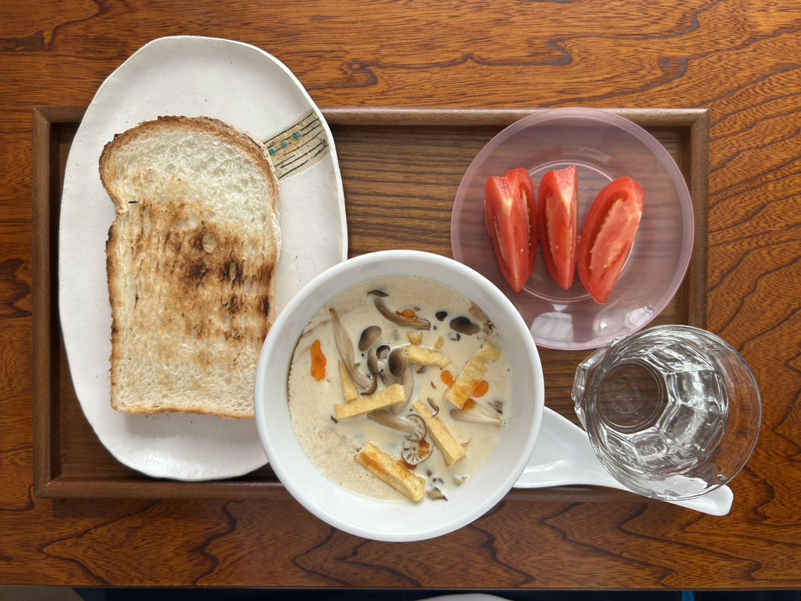
東京で約一か月間どこかしらで雨が降り長いことどんよりとしていたが、最近は天気が良すぎる。遮光カーテンをつけていないから朝の10時とか11時には部屋の中がすごく明るくて起きることになる。8時間寝たいのだけど６時間とか７時間のところで目が覚める。今日も晴れていたけど目覚めは良くなかった。朝から憂鬱になるのはどうにかならないものか。 起きて初めの楽しみである朝ごはん。今日は無印の梅しそおろしと麺つゆを納豆にかけたものと白米。
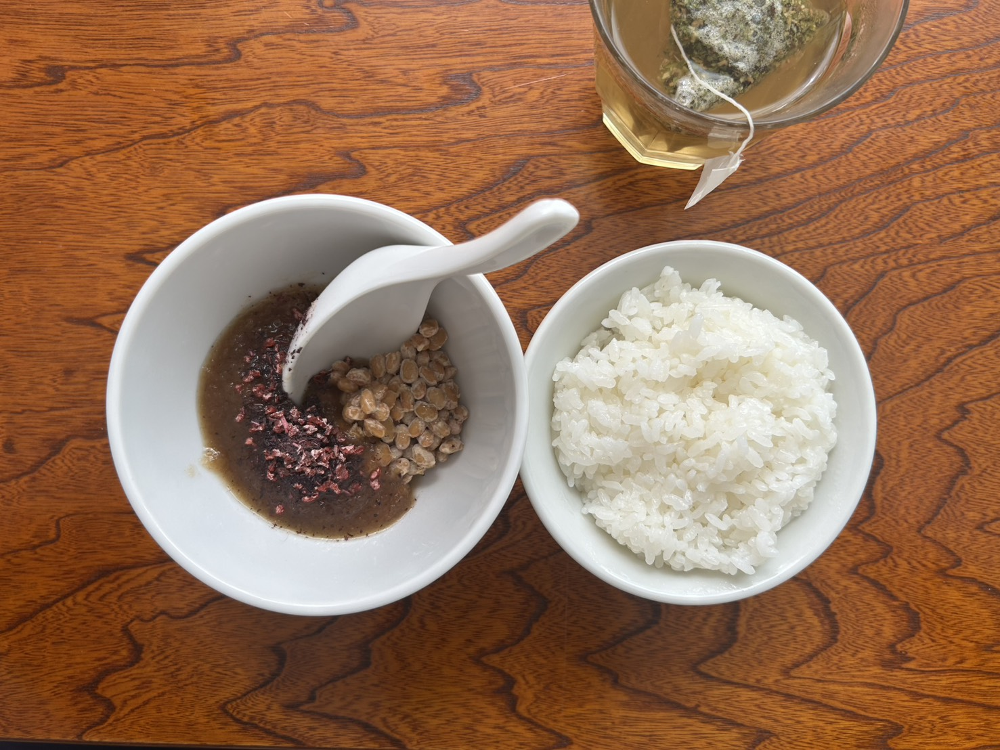
バイト先で賄いを食べることができるけど、料理するとき２～３人分の量を作るからその余りとか食べたいものがあるときに持っていく。今日は柿のサンドウィッチが食べたくて持参。これがモチベーションになる。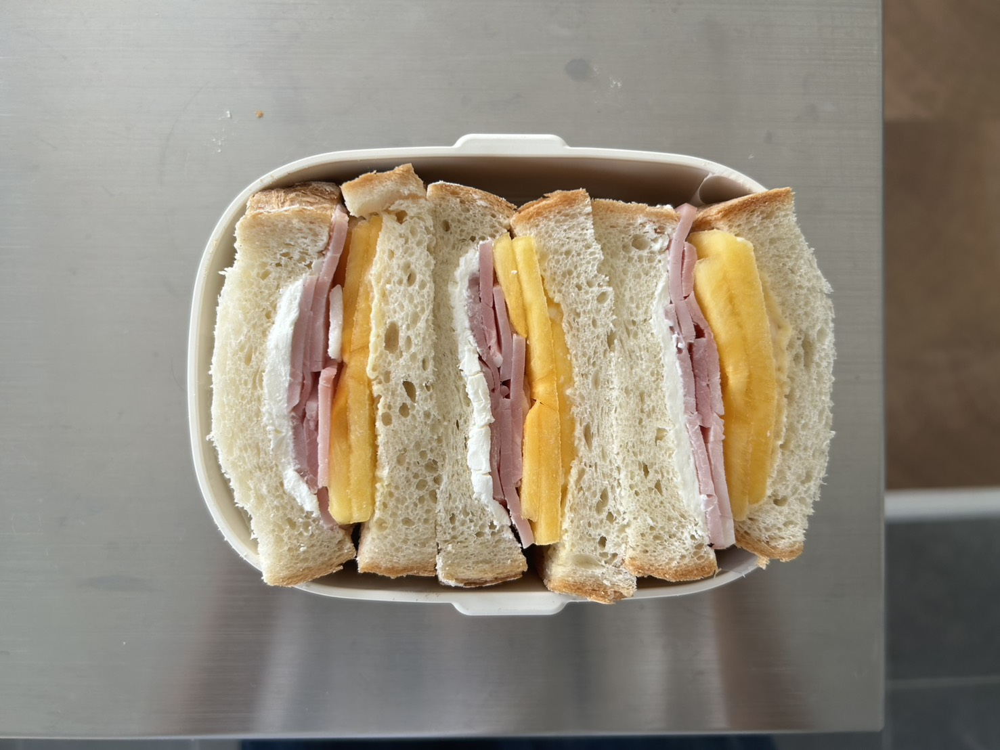
食パンを二枚用意して片方にはマヨネーズを塗っておく。もう片方にはクリームチーズ、ハム、スライスした柿の順番に重ねサンドする。今朝は珍しく気分がすっきりしていた。いつもは起きてすぐに何かをインプットをしないと不安でラジオを流すのだけれど、今日はその必要はなかったからミスチルのHOMEというアルバムを聴きながら大豆の炊き込みご飯を仕込み、炊けるまでに支度をした。豆ごはんは豆の香りがよく立つところと食べ応えがあるところが好き。 ２４時頃に帰宅して冷蔵庫にあるもので小腹を満たしながらあらいけいいちのアニメ日常を見る。疲れて帰ってきた夜に一番ちょうどいいアニメ。ドーパミン中毒性のあるアニメ。
.jpg) お米を食べたい分だけ研いで醬油と塩、少しの砂糖を先に入れ水を目盛りのところまで入れる。浸水させている間に大豆をフライパンで炒る。きのこと油揚げも食べやすい大きさにしておく。釜にすべて合わせて炊く。
お米を食べたい分だけ研いで醬油と塩、少しの砂糖を先に入れ水を目盛りのところまで入れる。浸水させている間に大豆をフライパンで炒る。きのこと油揚げも食べやすい大きさにしておく。釜にすべて合わせて炊く。
休日。兄の誕生日プレゼントにあげるブックケースに必要な材料を買いに新宿のオカダヤへ。6階から１１階までが手芸用品店でとても広い。糸一つでも選択肢が多いが使えそうな色をぱぱぱっととる。約30分滞在し自宅に帰ってすぐに作業にとり書かかる。明るいうちに家へ帰ると気分がいい。この時間帯の部屋にいられるのは休日だけだから。二時間半ほどで出来上がり。布の状態から針と糸を使って使えるものに変化させる。やりがいがある。文庫本の入る東袋を作って、最後に雑貨屋さんで買ったタイのユーモアのあるイルカのワッペンをつけて完成。 夜ご飯はスーパーのお惣菜(アジフライ)に助けてもらった。ソースの代わりに自作梅マヨを添えて。
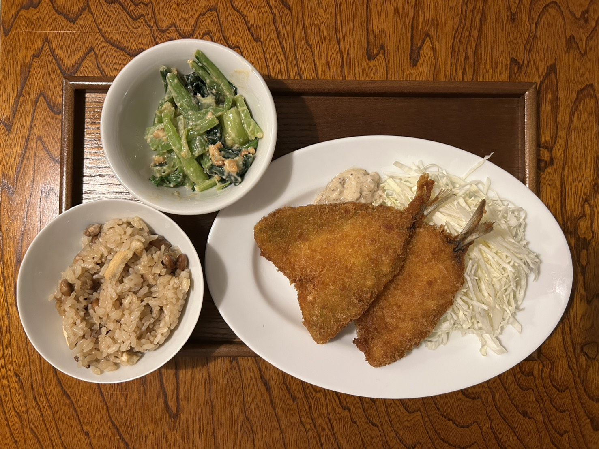
ネットで買った8000円の可愛いラグが届いた。敷いてみると部屋によく馴染んでいてうれしい。 昼は味噌煮込みうどん。母が作る味噌煮込みうどんは鶏肉、ネギ、椎茸、卵がはいっていたなと思い出しながら冷蔵庫にあるものを入れる。 冷凍そら豆、椎茸、卵。鶏肉のお出汁がよかったんだなと気づく。 土鍋もどんぶりもないから鍋のまま食べる。
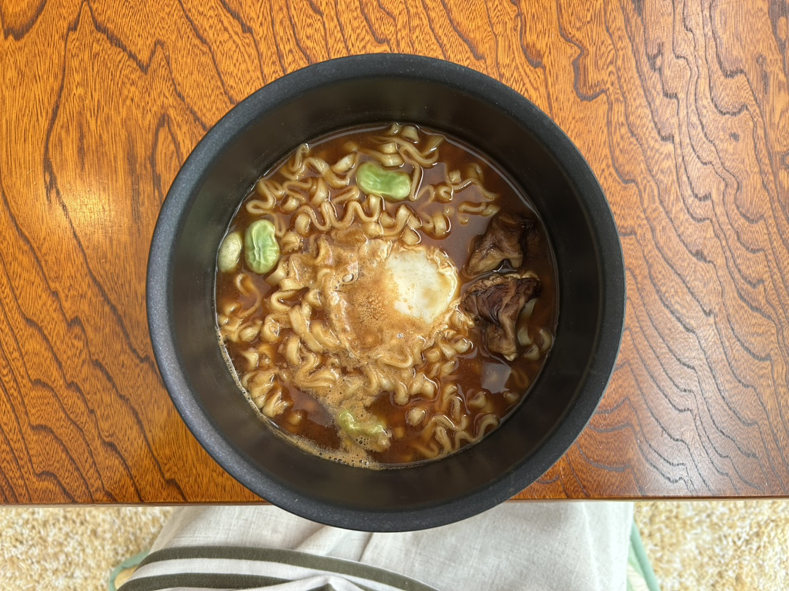
今日の夜行バスで三日間帰省するから冷蔵庫をすっきりさせた。家には何もないからバイト終わりにスーパーによってよもぎ餅とモズクを買う。よもぎ餅は醤油海苔巻きときなこ餅にして食べる。若干香るよもぎの緑の香りがおいしい。よもぎや黒豆が練り込まれた餅や玄米で作られた黄土色のもちはスーパーで惹かれるけど高く感じて普段買わないから、こういう時に買えるとすごく幸せになる。 24:30発の夜行バスで地元に帰る。
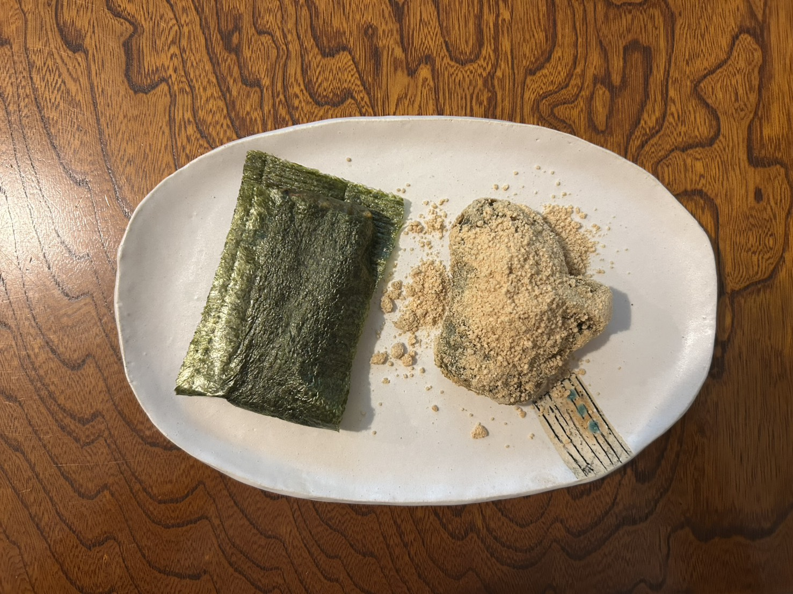
6:40に栄に到着。降りたら東京へ行く時にはまだ工事中だったハエラが見えた。景色が変わっている。 朝の栄はひんやりがらんとしている。朝日がビルに当たって至る所できれいに光っている。 地元の友達と会うご飯屋さんを決める。美味しいものを食べたいし、空間の居心地の良さも大切だしいろいろ考えてしまう。結果ロイヤルホストを選んだら間違いないと思っている。この場所だと話がしやすい。そう思っているのは私だけじゃないはず。広いテーブル、大きな窓、窓際に飾られた造花、ホテルのロビーのような空間。ケールのサラダとオニオングラタンスープとフライドポテト、栗のパフェをいただいた。 今日会った友達は物事をよく考える人でこの人に話してみたいと思うことがたくさんある。どう受け取るかなとかどう考えているのかなとか気になる。常に人とのかかわり方について考えている私にもっと自分勝手でいいと思う。と客観的なアドバイスをくれた。
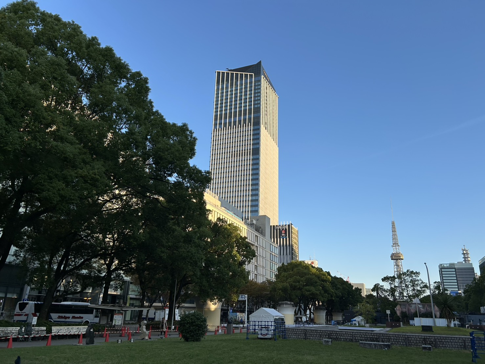
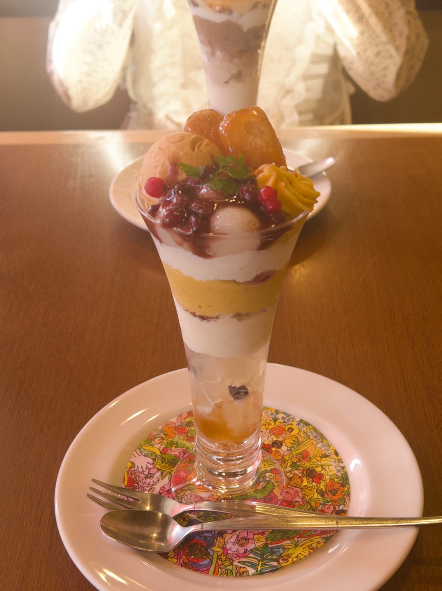
中学の友達二人と会った。8月に二人で東京に来てくれて一人は2週間ほど前にも来てくれたばかり。愛知にいるときと変わらない頻度で会えている。 小学校1年生で出会った友達が結婚する。あの時みたいにずっとは一緒にいなくなっていまは私の知らない10個ほど年上の男の人が一緒にいる。一緒に沢山の楽しい時間を過ごしてきたから毎日あんな風に楽しそうだったらいいなと願う。
父方のおじいちゃんの米寿のお祝いで湯谷温泉に旅行に来ている。はづ木という旅館に泊まっている。
宿につくと蓮の葉茶とサンザシのお菓子が出てきた。変わったものが出てくるなと思ったら夕飯も変わっていた。中国漢方薬膳懐石料理。
按田餃子のラゲーライスに入っている金針菜やきくらげがお料理に使われていたり、仙草ゼリーが出てきたり。重なる部分がたくさんあった。優しい味付けでじんわり美味しいところが似ている。私もこういう料理が作りたい。日常的に食べたいなと思う料理。
朝ごはんも優しかった。お腹いっぱいになるが体に響かない。
おじいちゃんがこれに懲りずにまた来てねと言う。もちろんと約束した。
時間の感じ方が場面ごとに違って不思議。東京へ行ってからまだ半年もたっていないのにもう1年ほどたっている気分だった。愛知に戻ってきて何もかも懐かしく懐かしさを感じるたびに寂しさとうれしさの中間にいる。
みんなと別れて一人新幹線で東京へ帰る。 これからどうしよう。何をしに来たんだっけ。環境にゆだねるのは簡単だがつまらない。みんな退職するとき多少のネガティブをもってそこではないどこかへいくわけで私もそのネガティブをしっかり理解してここを離れたい。そのためには楽しく美しく一生懸命に働くこと。
あっという間に日常に戻ったが自炊のやる気は出ない。バイトから帰ってきて愛知で買ったきよめ餅を食べる。きなこと白あんがもうすぐでとろけてしまいそうな柔らかい求肥に包まれている。
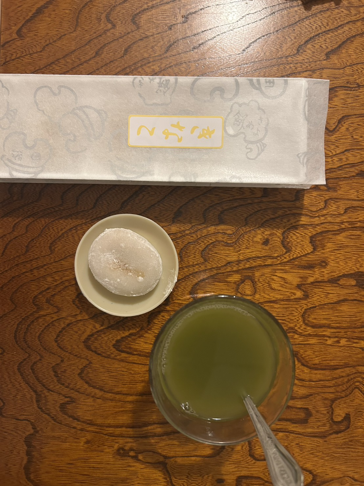
簡単でおいしい卵かけ納豆ご飯。サーモンとアボカドがあったからパンケーキを作ってハワイアンカフェにありそうなやつを作ってみた。パンケーキを塩こうじでしょっぱくしたらあまりしっくりこない。甘いふかふかのパンケーキでよかったな。
.jpg)
.jpg)
ヒューマントラストシネマで我々は宇宙人を見てきた。コラショの目覚まし時計、ポケモンの菓子パンシール、地獄のシャワーや水中宝探し、体育館を見下ろせるあの場所、平成の幼いころに引き戻された。
翼から見た暁太郎の映し方がアニメにしか出せない怖さだと思った。いろいろな出来事が重なり結びついてどんどん自分の中で宇宙人が作られていく様子がすごくリアルだった。翼目線で暁太郎への不信感は、だれもが感じ取れるようになっているから後半の暁太郎目線は見ていて反省した。
でもこの作りがとても面白いと思った。
子供から大人になる境目はなくてあのとき負った傷をどこかで折り合いをつけてみんな大人になっているんだ。最後のじゃあねはお互いの呪いを解くようだった。
渋谷は人が多いし広告や町の音がうるさい。それに大きな建物に囲まれてそこにも大きな電光掲示板で広告が流れている。情報が多い。疲れるからあまり行きたくない。
セブンの塩バターポップコーンを食べながら映画を振り返りこれを書いている。書き終わる前に一袋食べ終わってしまった。空腹で食べるポップコーンおいしい。夜ご飯はしゃげ昆布のおにぎりときくらげと鶏のスープ。
.jpg) きくらげと鶏のスープ
鶏の手羽元と生姜のスライス、水を鍋に入れて中火にかける沸騰したら灰汁をとって塩、八角、粒ブラックペッパーを加え弱火でことこと２０分煮る。きくらげとネギも加えて5分煮る。宿の薬膳料理に影響を受けて八角やきくらげを使っている。薬膳って何だろう。普段食べている普通の食材も体にいい効果を与えるものがあり、それらも薬膳と言っていいのだろうか。
きくらげと鶏のスープ
鶏の手羽元と生姜のスライス、水を鍋に入れて中火にかける沸騰したら灰汁をとって塩、八角、粒ブラックペッパーを加え弱火でことこと２０分煮る。きくらげとネギも加えて5分煮る。宿の薬膳料理に影響を受けて八角やきくらげを使っている。薬膳って何だろう。普段食べている普通の食材も体にいい効果を与えるものがあり、それらも薬膳と言っていいのだろうか。
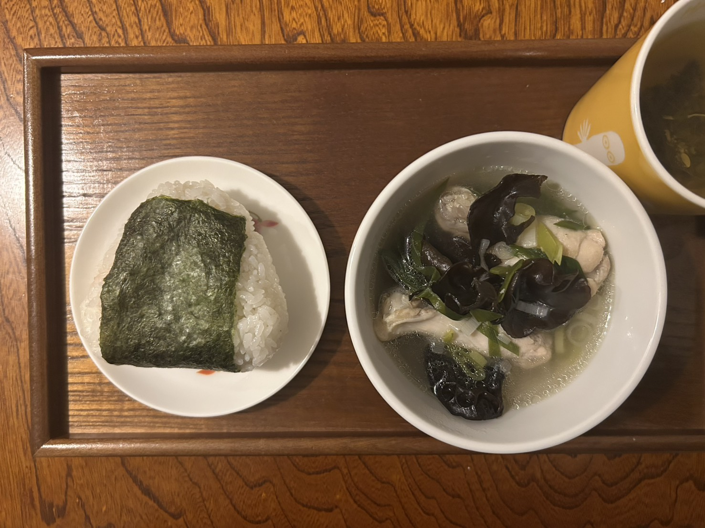
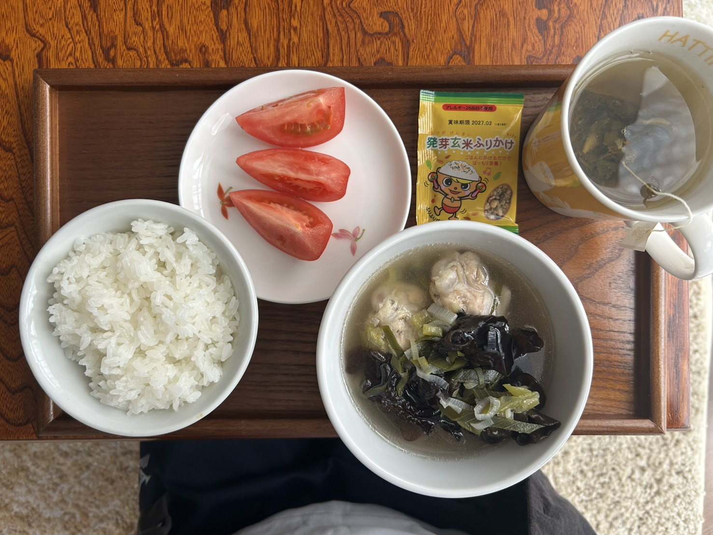
私は2階に住んでいるのだが、下にちょっとやばい人が住んでいる。物を落としてしまったときや掃除機をかけるとかならず癇癪を起して地面なのか壁なのかをどんどんと何度も叩くし隣人が夜の１２時に洗濯機を回していた(これもどうかと思う)時には野太い声で雄たけびを上げていた。物を落としてしまったときにはうるさくして申し訳ないが掃除はさせてくれと思う。このアパートに一人暮らしをしているおじさんというところで納得ができてしまうのが悔しい。幸せに暮らしをしているおじさんであってほしかった。いつかのびのびラジオ体操ができるような素敵なおうちに住みたい。 飲食店を営んでいる人たちはお客さんにどう利用してほしくて、何を目指してやっているのか。台湾のように日常的に外食するわけではないから外食は特別な人が多いと思う。そんな中どうしてお店をやっているのか気になる。 朝食はサーモンとキノコのトマト煮ときなこと梅をのせた納豆。
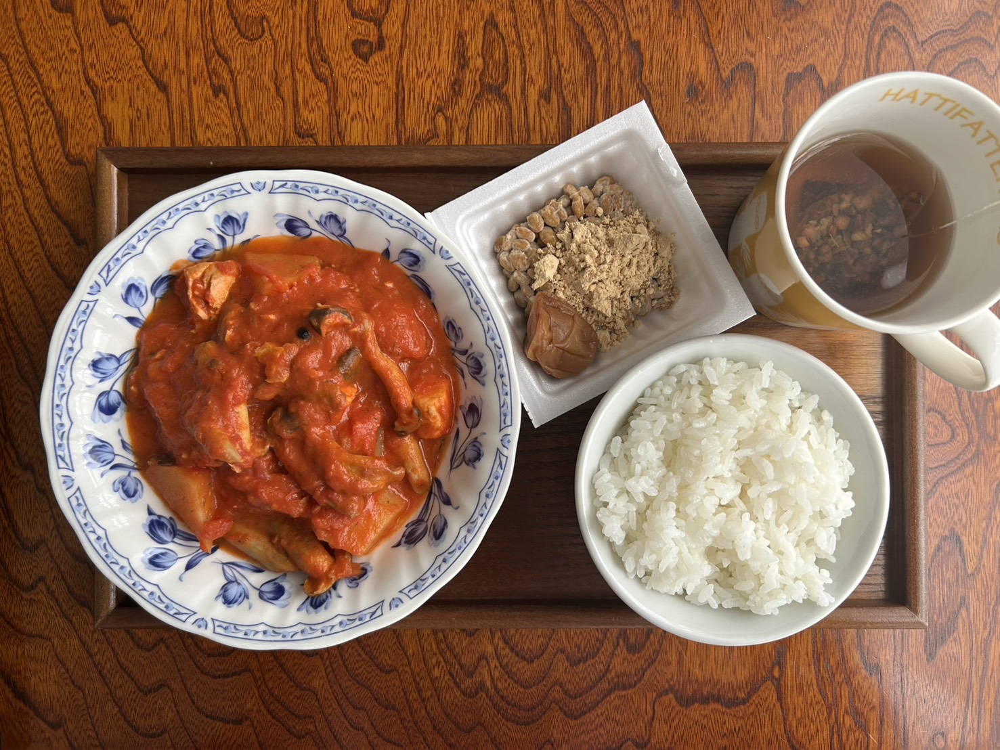
サーモンとキノコのトマト煮 トマト煮は鍋にオリーブオイルを入れてサーモン、きのこの順で炒める。塩で味付けしてきのこがしんなりしたらトマト缶を入れる。煮詰まって2/3くらいになったらディルを練りこんだクリームチーズを好きなだけ入れて塩で味を調える。破壊ありがとうの「三人分の記憶で同じ日を正確に思い出す」動画を見た。 破壊ありがとうというグループ名をつけた日のことを3人で思い出していくんだけど、各々の断片的な記憶を出し合っていくとだんだん繋がっていきあの日が滑らかに映し出されていく様子が映画的で面白かった。最近見た「我々は宇宙人」で、当事者間でも一方にとっては印象的で忘れられない出来事でももう一方はすっかり忘れてしまっていたり、第三者の中では記憶錯誤が起こっていたりと記憶の不確かさが怖く描かれていたから、こうやって同じ日を正しく思い出す作業をしている人たちを見れてよかった。記憶がおぼろげな森もりさんに田中さんが大丈夫俺たちが覚えているからってめっちゃいいこと言っていた。 私は料理が好きだけど得意じゃない。もっと料理を楽しみたい。いろんな料理家さんのレシピで沢山料理をし、短期大学での学びをじっくり振り返ろうと散歩中にやる気が出る。 りんごのシチューとめかじきのソテー。 シチューそんなに好きじゃないんだけど、冬の学校帰りやバイト帰りに自転車で風を切って鼻を赤くして帰ると、今温めるからねとシチューをくつくつしてくれたあたたかい記憶があるから寒くなると無性に食べたくなる。 ある日うちのシチューにはツナ缶を入れているんだよとおいしさの秘密を教えてくれた。母のシチューはいつも変わらない味。 今度ツナ缶とレモンピールを入れたシチュー作りたいな。あと栗とかサツマイモのシチューも。
.jpg) りんごのシチュー
鶏肉とじゃがいもひと口大、玉ねぎ３ｃｍ幅くらいの櫛切り、舞茸は割いておく。りんごはひと口大に切ったものとすりおろしを少々。
鶏肉に塩コショウを振ってすりおろしリンゴをよく揉みこんで10分ほどおいておく。バターを敷いたフライパンでお肉を焼く。表面が焼けたらじゃがいもと玉ねぎ、舞茸を加えてじゃがいもが透き通ってきたら薄力粉をまぶして具材にまとわせる。具材がつかるくらいの水を入れて強めの中火で10分煮込む。豆乳とりんごを入れて沸騰したら固形コンソメで味をつける。じゃがいもが柔らかくなるまで煮込む。
出来上がりすぐに食べるとりんごの甘さがあるが翌日になるとシチューに溶け込みしゃくっとした食感だけになる。それもまたいい。
りんごのシチュー
鶏肉とじゃがいもひと口大、玉ねぎ３ｃｍ幅くらいの櫛切り、舞茸は割いておく。りんごはひと口大に切ったものとすりおろしを少々。
鶏肉に塩コショウを振ってすりおろしリンゴをよく揉みこんで10分ほどおいておく。バターを敷いたフライパンでお肉を焼く。表面が焼けたらじゃがいもと玉ねぎ、舞茸を加えてじゃがいもが透き通ってきたら薄力粉をまぶして具材にまとわせる。具材がつかるくらいの水を入れて強めの中火で10分煮込む。豆乳とりんごを入れて沸騰したら固形コンソメで味をつける。じゃがいもが柔らかくなるまで煮込む。
出来上がりすぐに食べるとりんごの甘さがあるが翌日になるとシチューに溶け込みしゃくっとした食感だけになる。それもまたいい。
やったほうが良さそうなことはやったほうがいいしやらないほうが良さそうなことはやらないほうがいい。
自炊のいいところは食べたときにすべて分かるということ。おいしさの訳もおいしくなさの訳も振り返ればわかる。外食で美味しくないものと出会ったときどうして自分の口に合わないのか分からないとすっきりしない。いろんなものを入れた麻婆豆腐を食べながらそんなことを思う。
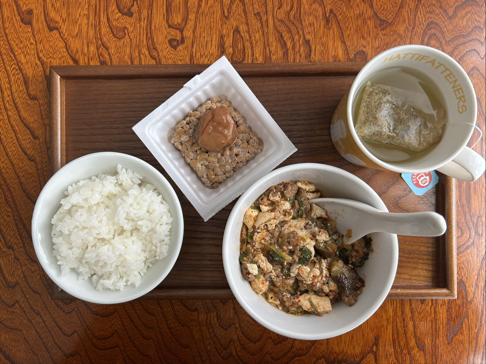
麻婆豆腐 茄子は乱切り、ねぎは薄めの斜め切り、木綿豆腐は大きめの一口大に切っておく。油を敷いたフライパンを中火で熱しひき肉を入れる。油が出てきたらそぼろ上になるように炒める。ここでお好みのスパイス(コリアンダー、シナモン、ブラックペッパー)を入れて肉に火が通ったら火を強めてなすを入れ茄子に油が回ったら水と豆腐を投入する。水分が煮詰まって減ってきたらねぎを入れてさっと炒め弱火にして水溶き片栗粉でとろみをつける。兄が昨日の深夜にうちに来て今朝出社していった。朝は時間がないから寝るまでの短い時間で色んな話をする。もののあわれの新しいアルバムの良さを共有しうまく言葉にできなかったけれど同じようなものを受け取っていることが分かった。一緒の環境で育ってきたからなのか。この好きが共有できるのはとてもうれしい。 休日の時間が長く感じるのはなぜか話している中で兄が時間は無限だといった。そうだった。時間は無限だが生き物には寿命があるから有限であり、人は老いていくため有限だということを日常でも感じる。
寒い日の朝ごはん。ぜんざいと厚揚げ豆腐のみぞれ煮。 厚揚げ豆腐のみぞれ煮がたべたくてなにを一緒に食べようと思ったときにぱっとぜんざいが浮かんでテンションが上がった。
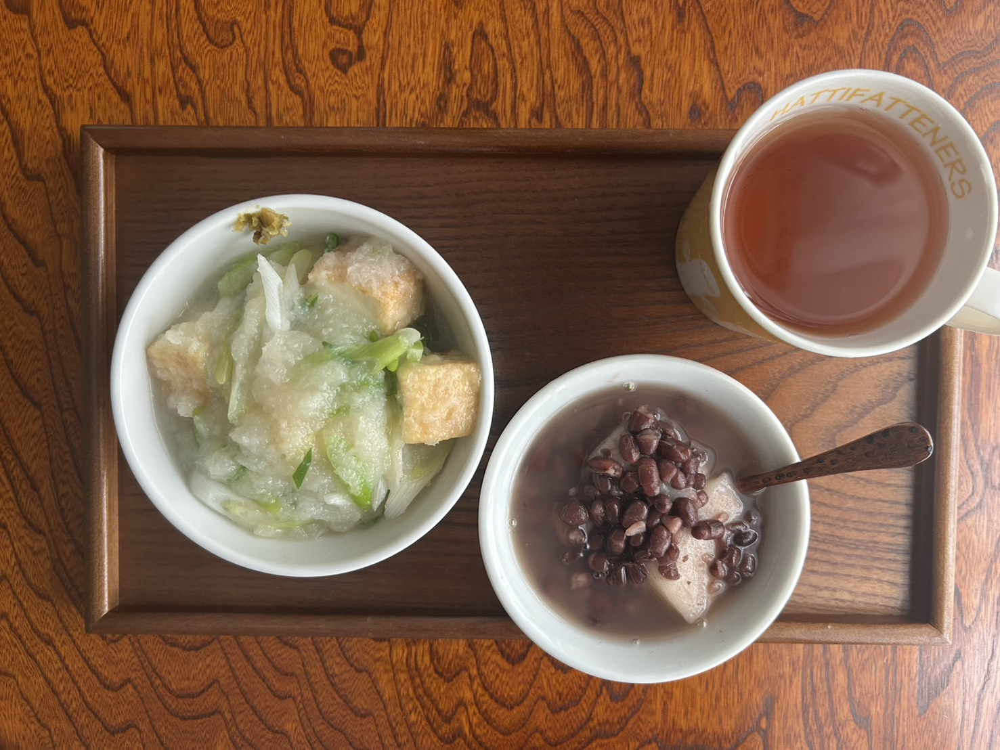
厚揚げ豆腐は大きめのサイコロに切り、ねぎ斜め切り、大根はすりおろす 厚揚げ豆腐に片栗粉をまぶしておく。フライパンに油を敷いて厚揚げ豆腐を焼く。コロコロ転がして全面焼けたらねぎを加えて炒め香りが出てきたら大根のすりおろしと水を少々いれてしばらく煮込み温める。塩で味付けをして柚子胡椒を添える。おとなしめな朝ごはん。おかゆとトマトと梅納豆。 朝は体に優しい食事ができたのに五連勤が終わったのと明日のお休みがうれしくて帰りのコンビニで沢山お菓子を買って食べた。えびのみりん焼き、かっぱえびせん、レジ横の金色のきなこのチロルチョコ、ビターなたけのこの里、ファミマの金のフィナンシェ。 お菓子を食べながらスマホを見ていたらあっという間に時間が過ぎお菓子もなくなってしまった。楽しい夜更かしにするには映画や本のほうが絶対にいい。
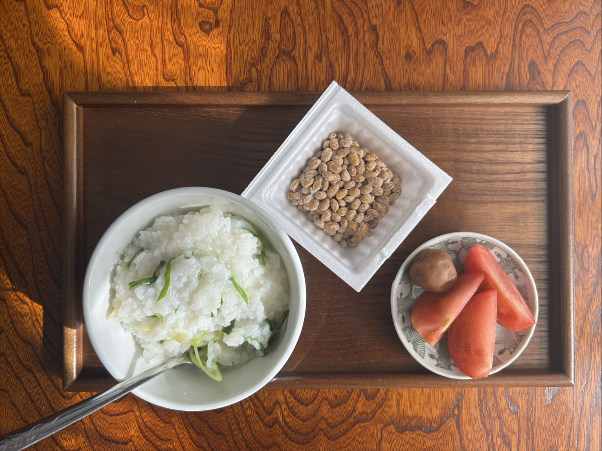
１５時に東京農業大学の学祭へ行った。収穫祭という名前に誘われて行ったけれどほとんどが売り切れていた。学生が育てた野菜やはちみつはもう13時の時点で売り切れだったらしい。陶芸趣味の会の皆さんの作品の中から陶器のペンダントネックレスと売店で農大名物だというカムカムドリンクを買った。売店には書店も併設されていて三浦哲哉さんの食べたくなる本の書き出しを読んで、これは読まなくてはと思った。こうやって自炊の記録をすることは大切なことのように思い続けていこうと決意した。 自分はコロナ渦で学祭がなかったからこの賑わいの中にいることが嬉しかった。学生が集まることのできるこの場所がうらやましかった。 １７時近くに学校を出て高円寺へ向かった。前回愛知から遊びに来た時に行ったお店を回る。服選びがうまくなってきた。どんなものや事に気持ちが動き、何に興味があるのか知ることができるのはショッピングの楽しさだなと帰る前に寄った蟹ブックスでも思った。 ナユタという店で二着買った。この店は前回来た時にもスウェットを購入していて今日スウェットを着ていた。そしたら店員さんが気づいてくれて、そこで前回お店にいた方だとわかり東京に引っ越してきたことを伝える。この方が迷っていた頃、最後に背中を押してくれたから報告とともに感謝を伝えた。ここでの楽しい時間やお姉さんとのやり取りがこちらに来ることのきっかけになったから伝えられてよかった。 今日は甜面醤を使って韓国味噌鍋を作ることに。一週間前に買った大根を今日使ったものだから水分がぬけてしまい食感が悪かった。大根は乾燥に弱いため葉の部分を落として新聞紙に包んで常温、冷蔵保管することを学ぶ。葉を落とすのは、水分を吸い上げられてしまうのを防ぐため。
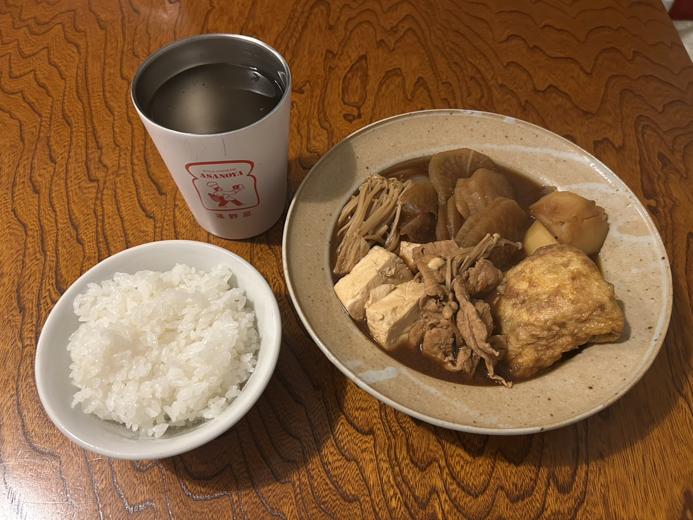
スープを作る 大根薄切り、えのき、じゃがいも小さめの一口大、豚肉、木綿豆腐、餅巾着を用意 鍋に水を入れて沸かし甜面醤、豆板醤、コチュジャン、塩、赤味噌を溶かして少し濃いめのスープを作る。そこに大根、えのき、じゃがいもをいれて再び沸騰したら豆腐も入れる。蓋をして野菜に火を通す。柔らかくなったら豚肉と餅巾着を入れ煮る。火が通ったら完成。14時バイト先へ向かう。この時間でもだいぶ寒い。まだこの季節のあの子に会ったことがないからどんな服を着るのか気になる。
洗濯物を回している間にシチューを作るための材料を買いに業務スーパーへ行く。アスファルトは濡れ木の葉っぱはつやっとしている。昨日雨が降っていたことを感じる空気が漂っている。太陽が照っているところは暖かく影は寒い。 子供が無邪気に喋ってる声が後ろから聞こえる。 こんな幸せそうな瞬間があるのならわたしもこの生活をしてみたい。 近くのいいマンションにわんちゃんを連れて帰ってゆくおじいさんの後ろ姿。この生活もしてみたい。
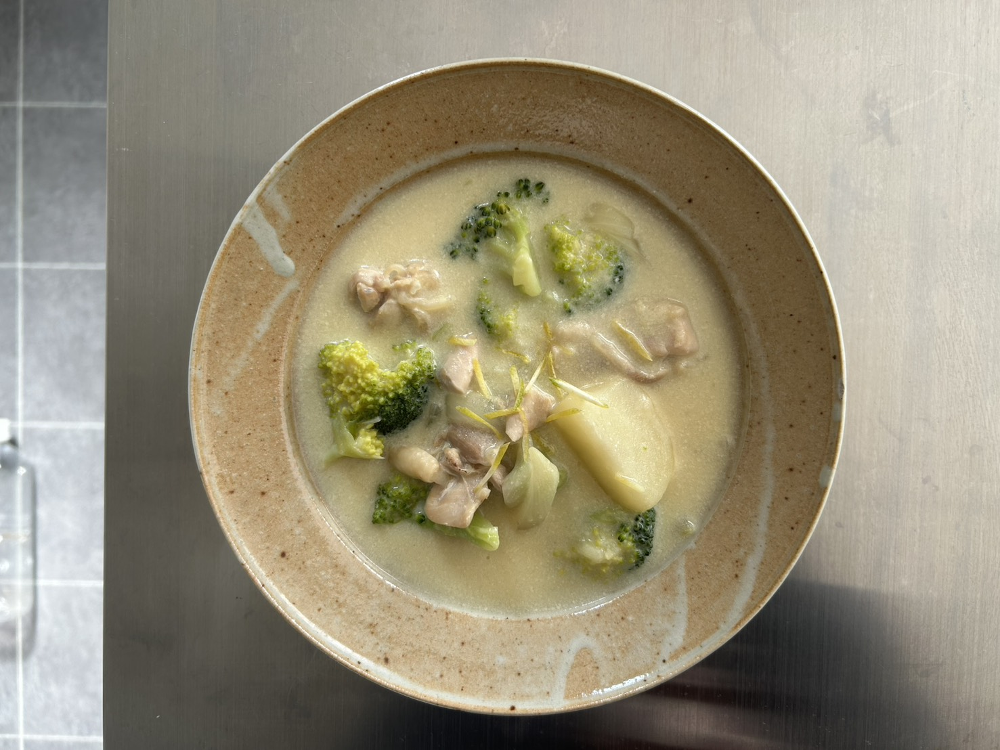
レモンシチュー レモン皮千切り、鶏肉もも肉一口大、たまねぎ１センチ幅、じゃがいも皮をむいて芽をとって一口大、ブロッコリー房は食べやすい大きさに、茎は火が通りやすいように薄切りにする。 フライパンにバターをいれて鶏肉を炒める。鶏肉に半分くらい火が通ったら玉ねぎとじゃがいもも加えて炒める。じゃがいもが透きとおって来たらブロッコリーも加えてさっと炒めたら米粉をふるいにかけて振り入れ具材にまとわせ炒める。具材が浸るくらいまで水とコンソメキューブを入れてじゃがいもに串がさせるくらいになったら豆乳を加えて沸騰したらレモンの皮をいれて１分程度煮込み塩で味を調整する。会話しているとき返答がずれていそうだなと分かっていながらテンポに遅れないように言葉を発してしまう。
人のお店で働いている。 １９時に家に帰った。自炊のやる気が起きず炊飯器で米を炊いてじゃがいもとかぼちゃを蒸して目玉焼きを焼いただけ。かぼちゃがほろっとしていて甘くてとてもおいしくてもう充分だった。蒸したかぼちゃをキッチンのつまみ食いで完食し炊き立てのご飯に目玉焼きを載せてオタフクソースとマヨネーズを少しかけて食べた。栄養足りていないけれど今日はこれでよし。
置き配が選択できなかった荷物の受け取りが８－１２時にあるから寝不足の早起きをした。１０時半まだこないけれど仕方がない。３日分の洗濯物を干して朝ごはんも作った。晴れていることに救われている気がする。